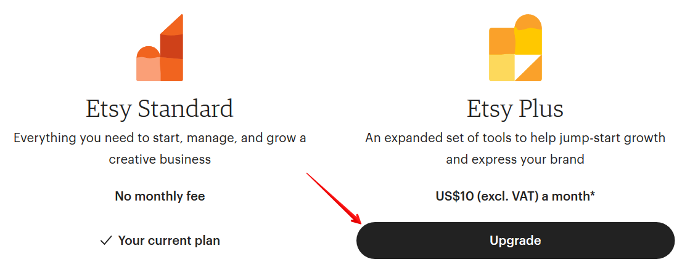
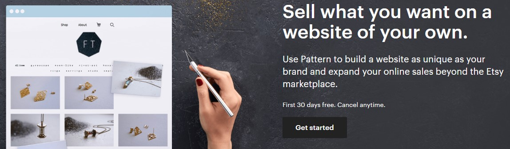
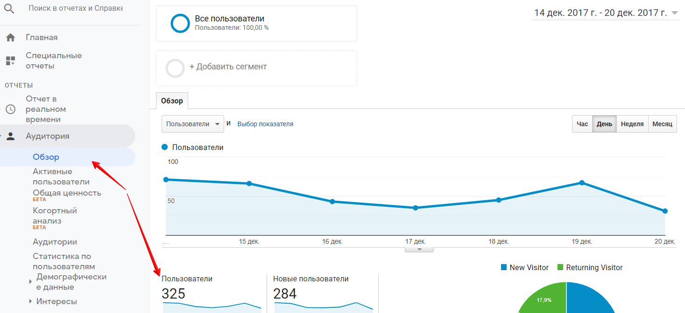

Что даёт Etsy Plus:
• 15 бесплатных листингов для добавления новых или обновления старых
товаров (сгорают по истечении месяца подписки)
• 5 долларов на рекламу Etsy Ads (сгорают по истечении месяца подписки)
• возможность купить доменное имя со скидкой 50% или бесплатный до-
мен .store – при переходе по купленному web-адресу покупатель попадёт
в ваш Etsy магазин
• два дополнительных типа баннера: карусель (до 4-х фотографий, которые
сменяют друг друга) и коллаж (до 4-х фотографий товаров на баннере)
• крупная дополнительная 5-я фотография в разделе Featured Items
• в Featured Items можно разместить ссылки на секции, а не только на от-
дельные листинги
• кнопка “Сообщить мне, когда проданный товар снова появится в мага-
зине” — с её помощью покупатели первыми узнают, когда какой-то товар
вновь появится на вашей витрине
• скидки у партнёров Etsy
Более подробно об Etsy Plus вы можете прочитать в этой статье:
https://proetsy.ru/etsy-plus/


Что такое Pattern
Если у вас в магазине подключен Etsy Payments, то вы можете создать на основе
Этси-магазина свой собственный сайт с уникальным дизайном, где будут про-
даваться ваши изделия.
Товары в интернет-магазин можно подгружать из Etsy-магазина. А все продажи
и наличие позиций будет синхронизироваться автоматически.
https://www.etsy.com/pattern
Стоимость ежемесячной подписки на данную платформу составляет 15 долла-
ров. Первые 30 дней ей можно пользоваться бесплатно.
Нужно учитывать, что так как это будет отдельный сайт в интернете, то привле-
кать посетителей на него необходимо самостоятельно.
Более подробно о сервисе Pattern вы можете прочитать в этой статье:
https://proetsy.ru/etsy-pattern-sobstvennyiy-internet-magazin-za-5-minut/
Что такое раздел Updates
В правом верхнем углу сайта есть кнопка Updates.
Если её нажать, то вы увидите новые товары и акции в магазинах, которые вы
добавили себе в избранное.


Плюс этого раздела в том, что и ваши клиенты/посетители магазина, кто доба-
вил его в Favorites, увидят новшества в вашем магазине.
Используйте это для повторного привлечения людей, которым уже интересен
ваш магазин и ваши изделия.
Что такое раздел Integrations
В личном кабинете продавца есть раздел Integrations. Там перечислены попу-
лярные программы и сервисы, которые помогают работать на Etsy
Они разделены по категориям, чтобы проще было среди них ориентироваться.
Вход в эти сервисы происходит через аккаунт Etsy, при этом ваши данные за-
щищены – никто не узнает ваши логин-пароль от магазина.

Например, вы можете анализировать свои листинги с помощью приложений
Marmalead или eRank. А редактировать фотографии через FotoFuze или Vela.
Часть сервисов платные, а часть – бесплатные.
Если вы не хотите большое пользоваться каким-то из приложений и давать им
данные своего магазина, то достаточно перейти на вкладку Manage и нажать
кнопку Disconnect справа от нужного сервиса.
Можно ли на Этси вести свой блог
На Etsy такой возможности нет. Но вы можете:
1. Вести свой блог на отдельном сайте и указать ссылку на него в профиле
магазина.
2. Использовать для этой цели Shop Updates (учитывая, что максимальный
размер сообщения там всего 255 символов)
Как и зачем подключать к магазину Google Analytics
На Этси есть возможность подключить к магазину Google Analytics и получать с
его помощью расширенную статистику по заходам и просмотрам.
Зачем это нужно? Например, вы можете узнать средний возраст посетителей.
Или сколько времени они проводят в магазине.
Для подключения нужно зайти в GA под вашим Google аккаунтом.
https://www.google.com/intl/ru_ru/analytics/
Введите данные своего магазина.

Галочки, которые есть на этой форме, можно оставить как есть. В конце нажмите
кнопку Get Tracking ID.
После этого вы перейдёте на страницу управления аккаунтом. Скопируйте ваш
Tracking ID (выделен красной рамкой).


Теперь переходим на Etsy, Shop Manager – Settings – Options, вкладка Web Ana-
lytics. Вставьте ваш ID в поле, как показано ниже.
Всё, вы подключили аккаунт Google Analytics к своему магазину. Примерно че-
рез 24 часа вы получите свои первые данные.


Как узнать, сколько человек заходит в мой магазин
Это можно посмотреть в разделе статистики личного кабинета продавца (Shop
Manager – Stats).
Нужный нам показатель статистики – это Visits. В данном случае Этси показы-
вает, что магазин посетили 516 человек.
Также это можно посмотреть с помощью привязанного к Etsy аккаунта Google
Analytics.
Выберите отчёт Аудитория – Обзор. Справа сверху укажите день, за который
вам интересно посмотреть статистику (или диапазон дней). После чего снизу вы
увидите графу Пользователи – это и есть число людей, которые посетили ваш
магазин в указанный отрезок времени.

Чуть ниже вы можете посмотреть страны ваших посетителей.
Хочется отметить, что число визитов в статистике Etsy и Google Analytics почти
никогда не совпадают. С чем это связано – не известно. Видимо, каждая си-
стема считает по-своему.
Заключение
Если после прочтения книги у вас остались вопросы, вы можете задать их на
страницах блога proetsy.ru или в личном письме на почту book@proetsy.ru с
пометкой «Настольная книга».
Также рекомендуем подписаться на наши социальные сети
• Телеграм-канал ПроЭтси
• Инстаграм ПроЭтси
• Вконтакте ПроЭтси
чтобы следить за последними новостями Etsy.
Хотим обратить ваше внимание, что сайт Этси может изменить свои правила в
любой момент. По мере того, как у нас будут появляться новые вопросы от про-
давцов, а также при нововведениях и изменениях на Etsy, мы будем постепенно
дополнять книгу. Чтобы у вас под рукой всегда было полное руководство по
превращению вашего любимого хобби в дополнительный источник дохода.